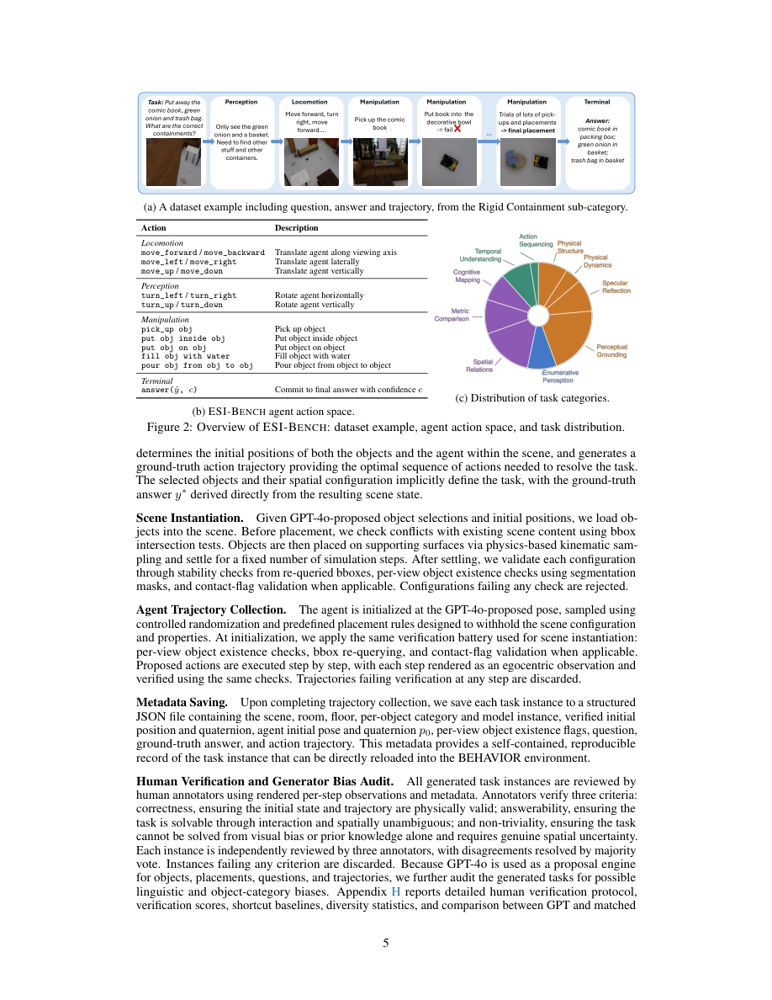

#1
★ 8/10
ESI-Bench: Towards Embodied Spatial Intelligence that Closes the Perception-Action Loop
ESI-Bench：面向闭合感知-行动回路的具身空间智能评测

图 Figure · Page 5 of paper
🎯 首个通过主动感知-行动闭环评测具身空间智能的综合基准
A new benchmark that tests spatial intelligence through active perception-action loops, not passive observation.
| 维度 | 中文 | English |
|---|---|---|
| ❓ 待解决 的问题 |
现有空间智能评测基准假设智能体被动接受完美观测，与真实具身场景严重脱节。真正的空间推理需要主动决策——去哪里看、如何移动、如何操作——才能揭示遮挡结构、物体动态、容纳关系和功能属性等被动感知无法获取的信息。当前多模态大模型评测仅基于静态图像，忽视了行动与感知之间的闭环交互。 | Current benchmarks for spatial intelligence assume agents passively receive perfect observations, which does not reflect real-world embodied settings. True spatial reasoning requires actively deciding where to look, how to move, and what to manipulate to uncover hidden structure — occluded geometry, object dynamics, containment, and functionality — that passive sensing cannot resolve. Existing multimodal large language models (MLLMs) are evaluated on static snapshots, missing the critical closed-loop interplay between action and perception. |
| 💡 解决 的亮点 |
• **感知-行动闭环重构**：将空间智能从被动观测重新定义为主动具身决策，智能体须主动选择感知、移动或操作来积累证据。\n• **大规模认知基准**：覆盖10大任务类别、29个子类别，基于OmniGibson构建，以Spelke核心知识系统为认知科学理论基础。\n• **"行动盲区"新失效模式**：揭示了一种新的失败根源——糟糕的行动选择导致糟糕的观测，进而引发连锁推理错误，其危害超过感知能力不足本身。\n• **元认知鸿沟**：人类实验表明，模型无论证据质量如何都会过早以高置信度作出判断，而人类会主动寻找证伪视角并修正信念。 | • **Perception-Action Loop Formulation**: Recasts spatial intelligence from passive observation to active embodied decision-making, where agents must choose to perceive, locomote, or manipulate to gather evidence. \n• **ESI-Bench Scale & Grounding**: 10 task categories, 29 subcategories built on OmniGibson, grounded in Spelke's core knowledge systems — a principled cognitive science foundation. \n• **Discovery of Action Blindness**: Identifies a new failure mode where poor action choices lead to poor observations, cascading into reasoning errors — distinct from and more critical than perceptual weakness. \n• **Metacognitive Gap Exposed**: Human studies reveal models prematurely commit with high confidence regardless of evidence quality, unlike humans who seek falsifying viewpoints and revise beliefs. |
| 🧪 实验 内容 |
实验在基于OmniGibson构建的ESI-Bench上进行，覆盖10个任务类别和29个子类别。使用当前最优多模态大模型（如GPT-4o级别模型）在三种观测条件下评测：被动单视角、随机多视角和主动具身探索。消融实验比较了3D感知模块与2D基线的表现。另设人类实验，测量受试者的信念修正与证伪行为，作为定性上界，揭示模型的元认知缺口。 | Experiments were conducted on ESI-Bench using OmniGibson as the simulation backbone, covering 10 task categories and 29 subcategories grounded in core knowledge systems. State-of-the-art MLLMs (e.g., GPT-4o-level models) were evaluated under three observation regimes: passive single-view, random multi-view, and active embodied exploration. Ablations tested 3D grounding modules versus 2D baselines. A separate human study measured belief revision and falsification-seeking behavior to establish a qualitative upper bound and expose the metacognitive gap. |
| 📊 实验 结果 |
在ESI-Bench各任务类别上，主动探索策略显著优于被动观测策略。随机多视角虽消耗更多图像，却常引入噪声而非有效信号，整体表现劣于主动探索。显式3D感知在深度敏感任务上提升稳定性，但不完美的3D表示比2D基线危害更大，因其扭曲了空间关系。人类受试者在所有条件下均显著优于多模态大模型，主要差距来自元认知策略而非感知能力本身。模型失败案例中大多数归因于"行动盲区"（行动选择失当），而非感知能力不足。（注：摘要未披露精确聚合准确率数字，以上为摘要中明确陈述的方向性结果。） | Active exploration substantially outperforms passive counterparts across task categories on ESI-Bench. Random multi-view observation, despite consuming far more images, often adds noise rather than signal and underperforms active strategies. Explicit 3D grounding stabilizes performance on depth-sensitive tasks, but imperfect 3D representations prove more harmful than 2D baselines by distorting spatial relations. Human participants significantly outperform all MLLM conditions, with the primary gap attributed to metacognitive strategy rather than raw perceptual ability. Most model failures (~majority of error cases) are traced to action blindness — poor action selection — rather than perceptual limitations. (Note: precise aggregate accuracy numbers are not reported in the abstract; the above reflects the directional findings stated.) |
| 🏁 结论 | ESI-Bench证明了真正的具身空间智能必须闭合感知-行动回路——主动探索不可或缺，无法被被动多视角采样所替代。本文的核心贡献在于识别出"行动盲区"与"元认知鸿沟"是当前多模态大模型最主要的失败根源，为超越感知扩展的新研究方向指明了道路。 | ESI-Bench establishes that true embodied spatial intelligence requires closing the perception-action loop — active exploration is essential and irreplaceable by passive multi-view sampling. The paper's core contribution is identifying "action blindness" and a "metacognitive gap" as the dominant failure modes in current MLLMs, pointing to a new research frontier beyond perceptual scaling. |
| 🔗 论文 链接 |
arXiv: 2605.18746v1 · 📥 PDF | |
⚙️ Method · 方法详解
ESI-Bench在OmniGibson仿真环境中构建了涵盖几何、物理、容纳关系和功能属性的多类任务。智能体不再获得完美的神谕观测，而须连续发出行动指令——移动、观察或操作——来主动积累空间推理所需的证据。实验对当前最优多模态大模型进行了全面测评，并对被动单视角、随机多视角与主动探索三种策略进行消融对比。此外还测试了3D感知模块，评估显式深度信息的利弊。人类受试者作为上界参照，揭示了模型与人类在信念修正策略上的本质差异。
ESI-Bench builds a simulation environment on OmniGibson where agents are given tasks spanning geometry, physics, containment, and functionality. Rather than receiving oracle observations, agents must issue sequential action decisions — choosing to move, look, or manipulate — to gather the observations needed for spatial reasoning. State-of-the-art MLLMs are evaluated in this loop, with ablations comparing passive (single-view), random multi-view, and active exploration strategies. 3D grounding modules are also tested to assess whether explicit depth information helps or hurts. Human participants serve as an upper-bound reference and reveal qualitative differences in belief revision strategies.
🌟 Why It Matters · 为什么重要
随着具身AI智能体迈向真实世界部署，仅测试被动感知的评测基准从根本上误判了智能体能力。ESI-Bench转变了评测范式，并揭示了关键失效模式——尤其是元认知缺陷——将为下一代具备空间感知和行动意识的基础模型研发指明方向。
As embodied AI agents move into physical and simulated real-world deployment, benchmarks that only test passive perception fundamentally misrepresent agent capability. ESI-Bench shifts the evaluation paradigm and exposes critical failure modes — especially metacognitive deficits — that will guide the next generation of spatially intelligent, action-aware foundation models.